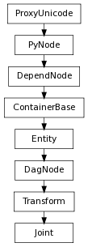

pymel.core.nodetypes.Joint¶

- class Joint(*args, **kwargs)¶
class counterpart of mel function joint
The joint command is used to create, edit, and query, joints within Maya. (The standard edit(-e) and query(-q) flags are used for edit and query functions). If the object is not specified, the currently selected object (dag object) will be used. Multiple objects are allowed only for the edit mode. The same edit flags will be applied on all the joints selected, except for -p without -r (set joint position in the world space). An ik handle in the object list is equivalent to the list of joints the ik handle commands. When -ch/children is present, all the child joints of the specified joints, including the joints implied by possible ik handles, will also be included. In the creation mode, a new joint will be created as a child of a selected transform or starts a hierarchy by itself if no transform is selected. An ik handle will be treated as a transform in the creation mode. The default values of the arguments are: -degreeOfFreedom xyz -name Joint#-position 0 0 0 -absolute -dof xyz-scale 1.0 1.0 1.0 -scaleCompensate true -orientation 0.0 0.0 0.0 -scaleOrientation 0.0 0.0 0.0 -limitX -360 360 -limitY -360 360 -limitZ -360 360 -angleX 0.0 -angleY 0.0 -angleZ 0.0 -stiffnessX 0.0 -stiffnessY 0.0 -stiffnessZ 0.0 -limitSwitchX no -limitSwitchY no -limitSwitchZ no -rotationOrder xyz Those arguments can be specified in the creation mode, editied in the edit mode (-e), or queried in the query mode (-q).
- assumePreferredAngles(val=True, **kwargs)¶
Meaningful only in the edit mode. It sets the joint angles to the corresponding preferred angles.
Derived from mel command maya.cmds.joint
- children(val=True, **kwargs)¶
It tells the command to apply all the edit options not only to the selected joints, but also to their descendent joints in the DAG.
Derived from mel command maya.cmds.joint
- component(val=True, **kwargs)¶
Use with the -position switch to position the joint relative to its parent (like -relative) but to compute new positions for all children joints so their world coordinate positions do not change.
Derived from mel command maya.cmds.joint
- connect(*args, **kwargs)¶
This cmd will connect two skeletons based on the selected two joints. The first selected joint can be made a child of the parent of the second selected joint or a child of the second selected joint, depending on the flags used. Note1: The first selected joint must be the root of a skeleton. The second selected joint must have a parent. Note2: If a joint name is specified in the cmd line, it is used as the child and the first selected joint will be the parent. If no joint name is given at the cmd line, two joints must be selected.
(<function connectJoint at 0xb487578>, <function addCmdDocsCallback at 0xbc036e0>, (‘connectJoint’, ‘’), {})
- Flags:
Long name (short name) Argument Types Properties connectMode (cm) bool 
The first selected joint will be parented under the parent of the second selected joint. Flag can have multiple arguments, passed either as a tuple or a list.
parentMode (pm) bool
- The first selected joint will be parented under the second selected joint. Both joints will be in the active list(selection list).
Derived from mel command maya.cmds.connectJoint
Example:
import pymel.core as pm # make joint1 a child of joint4. # pm.connectJoint( 'joint1', 'joint4', pm=True ) # make joint1 a child of joint4's parent # pm.connectJoint( 'joint1', 'joint4', cm=True )
- disconnect(*args, **kwargs)¶
This command will break a skeleton at the selected joint and delete any associated handles.
(<function disconnectJoint at 0xb490050>, <function addCmdDocsCallback at 0xbc036e0>, (‘disconnectJoint’, ‘’), {})
- Flags:
Long name (short name) Argument Types Properties attachHandleMode (ahm) bool
- This flag is obsolete and no longer supported. Flag can have multiple arguments, passed either as a tuple or a list.
deleteHandleMode (dhm) bool
- Delete the handle on the associated joint.
Derived from mel command maya.cmds.disconnectJoint
Example:
import pymel.core as pm pm.joint( p=(0, 0, 0), name='jointA' ) pm.joint( p=(0, 1, 0), name='jointB' ) pm.joint( p=(0, 2, 0), name='jointC' ) pm.disconnectJoint( 'jointB' )
- getAngleX(**kwargs)¶
Set the x-axis angle. When queried, this flag returns a float.
Derived from mel command maya.cmds.joint
- getAngleY(**kwargs)¶
Set the y-axis angle. When queried, this flag returns a float.
Derived from mel command maya.cmds.joint
- getAngleZ(**kwargs)¶
Set the z-axis angle. When queried, this flag returns a float.
Derived from mel command maya.cmds.joint
- getDegreeOfFreedom(**kwargs)¶
Specifies the degrees of freedom for the IK. Valid strings consist of non-duplicate letters from x, y, and z. The letters in the string indicate what rotations are to be used by IK. The order a letter appear in the string does not matter. Examples are x, yz, xyz. When queried, this flag returns a string. Modifying dof will change the locking state of the corresponding rotation attributes. The rule is: if an rotation is turned into a dof, it will be unlocked if it is currently locked. When it is turned into a non-dof, it will be locked if it is not currently locked.
Derived from mel command maya.cmds.joint
- getDegreesOfFreedom()¶
Get degrees of freedom of this joint
Return type: (bool, bool, bool) Derived from api method maya.OpenMayaAnim.MFnIkJoint.getDegreesOfFreedom
- getExists(**kwargs)¶
Does the named joint exist? When queried, this flag returns a boolean.
Derived from mel command maya.cmds.joint
- getLimitSwitchX(**kwargs)¶
Use the limit the x-axis rotation? When queried, this flag returns a boolean.
Derived from mel command maya.cmds.joint
- getLimitSwitchY(**kwargs)¶
Use the limit the y-axis rotation? When queried, this flag returns a boolean.
Derived from mel command maya.cmds.joint
- getLimitSwitchZ(**kwargs)¶
Use the Limit the z-axis rotation? When queried, this flag returns a boolean.
Derived from mel command maya.cmds.joint
- getLimitX(**kwargs)¶
Set lower and upper limits on the x-axis of rotation. Also turns on the joint limit. When queried, this flag returns 2 floats.
Derived from mel command maya.cmds.joint
- getLimitY(**kwargs)¶
Set lower and upper limits on the y-axis of rotation. Also turns on the joint limit. When queried, this flag returns 2 floats.
Derived from mel command maya.cmds.joint
- getLimitZ(**kwargs)¶
Set lower and upper limits on the z-axis of rotation. Also turns on the joint limit. When queried, this flag returns 2 floats.
Derived from mel command maya.cmds.joint
- getMaxRotateDampXRange()¶
Get the maximum of the damping range in X. This corresponds to the maxRotateDampXRange attribute on the joint.
Return type: float Derived from api method maya.OpenMayaAnim.MFnIkJoint.maxRotateDampXRange
- getMaxRotateDampXStrength()¶
Get the minimum of the damping strength in X.
Return type: float Derived from api method maya.OpenMayaAnim.MFnIkJoint.maxRotateDampXStrength
- getMaxRotateDampYRange()¶
Get the maximum of the damping range in Y. This corresponds to the maxRotateDampYRange attribute on the joint.
Return type: float Derived from api method maya.OpenMayaAnim.MFnIkJoint.maxRotateDampYRange
- getMaxRotateDampYStrength()¶
Get the minimum of the damping strength in X.
Return type: float Derived from api method maya.OpenMayaAnim.MFnIkJoint.maxRotateDampYStrength
- getMaxRotateDampZRange()¶
Get the maximum of the damping range in Z. This corresponds to the maxRotateDampZRange attribute on the joint.
Return type: float Derived from api method maya.OpenMayaAnim.MFnIkJoint.maxRotateDampZRange
- getMaxRotateDampZStrength()¶
Get the minimum of the damping strength in X.
Return type: float Derived from api method maya.OpenMayaAnim.MFnIkJoint.maxRotateDampZStrength
- getMinRotateDampXRange()¶
Get the minimum of the damping range in X. This corresponds to the minRotateDampXRange attribute on the joint.
Return type: float Derived from api method maya.OpenMayaAnim.MFnIkJoint.minRotateDampXRange
- getMinRotateDampXStrength()¶
Get the minimum of the damping strength in X.
Return type: float Derived from api method maya.OpenMayaAnim.MFnIkJoint.minRotateDampXStrength
- getMinRotateDampYRange()¶
Get the minimum of the damping range in Y. This corresponds to the minRotateDampYRange attribute on the joint.
Return type: float Derived from api method maya.OpenMayaAnim.MFnIkJoint.minRotateDampYRange
- getMinRotateDampYStrength()¶
Get the minimum of the damping strength in X.
Return type: float Derived from api method maya.OpenMayaAnim.MFnIkJoint.minRotateDampYStrength
- getMinRotateDampZRange()¶
Get the minimum of the damping range in Z. This corresponds to the minRotateDampZRange attribute on the joint.
Return type: float Derived from api method maya.OpenMayaAnim.MFnIkJoint.minRotateDampZRange
- getMinRotateDampZStrength()¶
Get the minimum of the damping strength in X.
Return type: float Derived from api method maya.OpenMayaAnim.MFnIkJoint.minRotateDampZStrength
- getOrientation()¶
Get the joint orientation. This corresponds to the jointOrient attribute on the joint, which is stored internally as a quaternion. It is different from the rotation orientation defined in the transform node. Modifying the jointOrient changes the coordinate axes, which affects how scaling a joint behaves.
Return type: Quaternion Derived from api method maya.OpenMayaAnim.MFnIkJoint.getOrientation
- getPreferedAngle()¶
Get the preferred orientation for this joint (in XYZ order)
Return type: (float, float, float) Derived from api method maya.OpenMayaAnim.MFnIkJoint.getPreferedAngle
- getRadius(**kwargs)¶
Specifies the joint radius.
Derived from mel command maya.cmds.joint
- getScale(**kwargs)¶
Scale of the joint. When queried, this flag returns 3 floats.
Derived from mel command maya.cmds.joint
- getScaleCompensate(**kwargs)¶
It sets the scaleCompenstate attribute of the joint to the given argument. When this is true, the scale of the parent joint will be compensated before any rotation of this joint is applied, so that the bone to the joint is scaled but not the bones to its child joints. When queried, this flag returns an boolean.
Derived from mel command maya.cmds.joint
- getScaleOrientation()¶
Get the orientation of the coordinate axes for rotation. This is equivalent to calling the MFnTransform::rotateOrientation method, and corresponds to the rotateAxis attribute on the joint node.
Return type: Quaternion Derived from api method maya.OpenMayaAnim.MFnIkJoint.getScaleOrientation
- getSegmentScale()¶
Get the local space scale values for the joint segment (bone). This is equivalent to calling MFnTransform::getScale .
Return type: (float, float, float) Derived from api method maya.OpenMayaAnim.MFnIkJoint.getSegmentScale
- getStiffness()¶
Get the stiffness (from 0 to 100.0) for the joint. The stiffness attribute is used by ik solvers to generate a resistance to a joint motion. The higher the stiffness the less it will rotate. Stiffness works in relative sense: it determines the willingness of this joint to rotate with respect to the other joint in the ik chain.
Return type: (float, float, float) Derived from api method maya.OpenMayaAnim.MFnIkJoint.getStiffness
- getStiffnessX(**kwargs)¶
Set the stiffness (from 0 to 100.0) for x-axis. When queried, this flag returns a float.
Derived from mel command maya.cmds.joint
- getStiffnessY(**kwargs)¶
Set the stiffness (from 0 to 100.0) for y-axis. When queried, this flag returns a float.
Derived from mel command maya.cmds.joint
- getStiffnessZ(**kwargs)¶
Set the stiffness (from 0 to 100.0) for z-axis. When queried, this flag returns a float.
Derived from mel command maya.cmds.joint
- hikJointName()¶
Get the name that the HumanIK solver uses to identify this joint.
Return type: unicode Derived from api method maya.OpenMayaAnim.MFnIkJoint.hikJointName
- insert(*args, **kwargs)¶
This command will insert a new joint under the given or selected joint. If the given joint has child joints, they will be reparented under the new inserted joint. The given joint(or selected joint) should not have skin attached. The command works on the selected joint. No options or flags are necessary.
(<function insertJoint at 0xb49e5f0>, <function addCmdDocsCallback at 0xbc036e0>, (‘insertJoint’, ‘’), {})
Derived from mel command maya.cmds.insertJoint
Example:
import pymel.core as pm # Will insert a new joint under joint2. Child joints of joint2 will be # under the new inserted joint. pm.insertJoint( 'joint2' )
- orientJoint(val=True, **kwargs)¶
The argument can be one of the following strings: xyz, yzx, zxy, zyx, yxz, xzy, none. It modifies the joint orientation and scale orientation so that the axis indicated by the first letter in the argument will be aligned with the vector from this joint to its first child joint. For example, if the argument is xyz, the x-axis will point towards the child joint. The alignment of the remaining two joint orient axes are dependent on whether or not the -sao/-secondaryAxisOrient flag is used. If the -sao flag is used, see the documentation for that flag for how the remaining axes are aligned. In the absence of a user specification for the secondary axis orientation, the rotation axis indicated by the last letter in the argument will be aligned with the vector perpendicular to first axis and the vector from this joint to its parent joint. The remaining axis is aligned according the right hand rule. If the argument is none, the joint orientation will be set to zero and its effect to the hierarchy below will be offset by modifying the scale orientation. The flag will be ignored if: A. the joint has non-zero rotations when the argument is not none. B. the joint does not have child joint, or the distance to the child joint is zero when the argument is not none. C. either flag -o or -so is set.
Derived from mel command maya.cmds.joint
- secondaryAxisOrient(val=True, **kwargs)¶
The argument can be one of the following strings: xup, xdown, yup, ydown, zup, zdown, none. This flag is used in conjunction with the -oj/orientJoint flag. It specifies the scene axis that the second axis should align with. For example, a flag combination of -oj yzx -sao yupwould result in the y-axis pointing down the bone, the z-axis oriented with the scene’s positive y-axis, and the x-axis oriented according to the right hand rule.
Derived from mel command maya.cmds.joint
- setAngleX(val=True, **kwargs)¶
Set the x-axis angle. When queried, this flag returns a float.
Derived from mel command maya.cmds.joint
- setAngleY(val=True, **kwargs)¶
Set the y-axis angle. When queried, this flag returns a float.
Derived from mel command maya.cmds.joint
- setAngleZ(val=True, **kwargs)¶
Set the z-axis angle. When queried, this flag returns a float.
Derived from mel command maya.cmds.joint
- setDegreeOfFreedom(val=True, **kwargs)¶
Specifies the degrees of freedom for the IK. Valid strings consist of non-duplicate letters from x, y, and z. The letters in the string indicate what rotations are to be used by IK. The order a letter appear in the string does not matter. Examples are x, yz, xyz. When queried, this flag returns a string. Modifying dof will change the locking state of the corresponding rotation attributes. The rule is: if an rotation is turned into a dof, it will be unlocked if it is currently locked. When it is turned into a non-dof, it will be locked if it is not currently locked.
Derived from mel command maya.cmds.joint
- setDegreesOfFreedom(freeInX, freeInY, freeInZ)¶
Set the degrees of freedom of this joint by specifying which axes are allowed to rotate.
Parameters : - freeInX : bool
the first degree of freedom
- freeInY : bool
the second degree of freedom
- freeInZ : bool
the third degree of freedom
Derived from api method maya.OpenMayaAnim.MFnIkJoint.setDegreesOfFreedom
- setLimitSwitchX(val=True, **kwargs)¶
Use the limit the x-axis rotation? When queried, this flag returns a boolean.
Derived from mel command maya.cmds.joint
- setLimitSwitchY(val=True, **kwargs)¶
Use the limit the y-axis rotation? When queried, this flag returns a boolean.
Derived from mel command maya.cmds.joint
- setLimitSwitchZ(val=True, **kwargs)¶
Use the Limit the z-axis rotation? When queried, this flag returns a boolean.
Derived from mel command maya.cmds.joint
- setLimitX(val=True, **kwargs)¶
Set lower and upper limits on the x-axis of rotation. Also turns on the joint limit. When queried, this flag returns 2 floats.
Derived from mel command maya.cmds.joint
- setLimitY(val=True, **kwargs)¶
Set lower and upper limits on the y-axis of rotation. Also turns on the joint limit. When queried, this flag returns 2 floats.
Derived from mel command maya.cmds.joint
- setLimitZ(val=True, **kwargs)¶
Set lower and upper limits on the z-axis of rotation. Also turns on the joint limit. When queried, this flag returns 2 floats.
Derived from mel command maya.cmds.joint
- setMaxRotateDampXRange(angle)¶
Set the maximum of the damping range in X
Parameters : - angle : float
the damping range to set
Derived from api method maya.OpenMayaAnim.MFnIkJoint.setMaxRotateDampXRange
- setMaxRotateDampXStrength(angle)¶
Set the maximum of the damping strength in X.
Parameters : - angle : float
The new damping strength value
Derived from api method maya.OpenMayaAnim.MFnIkJoint.setMaxRotateDampXStrength
- setMaxRotateDampYRange(angle)¶
Set the maximum of the damping range in Y
Parameters : - angle : float
the damping range to set
Derived from api method maya.OpenMayaAnim.MFnIkJoint.setMaxRotateDampYRange
- setMaxRotateDampYStrength(angle)¶
Set the maximum of the damping strength in Y.
Parameters : - angle : float
The new damping strength value
Derived from api method maya.OpenMayaAnim.MFnIkJoint.setMaxRotateDampYStrength
- setMaxRotateDampZRange(angle)¶
Set the maximum of the damping range in Z
Parameters : - angle : float
the damping range to set
Derived from api method maya.OpenMayaAnim.MFnIkJoint.setMaxRotateDampZRange
- setMaxRotateDampZStrength(angle)¶
Set the maximum of the damping strength in Z.
Parameters : - angle : float
The new damping strength value
Derived from api method maya.OpenMayaAnim.MFnIkJoint.setMaxRotateDampZStrength
- setMinRotateDampXRange(angle)¶
Set the minimum of the damping range in X
Parameters : - angle : float
The damping range to set
Derived from api method maya.OpenMayaAnim.MFnIkJoint.setMinRotateDampXRange
- setMinRotateDampXStrength(angle)¶
Set the maximum of the damping strength in Z.
Parameters : - angle : float
The new damping strength value
Derived from api method maya.OpenMayaAnim.MFnIkJoint.setMinRotateDampXStrength
- setMinRotateDampYRange(angle)¶
Set the minimum of the damping range in Y
Parameters : - angle : float
the damping range to set
Derived from api method maya.OpenMayaAnim.MFnIkJoint.setMinRotateDampYRange
- setMinRotateDampYStrength(angle)¶
Set the maximum of the damping strength in Y.
Parameters : - angle : float
The new damping strength value
Derived from api method maya.OpenMayaAnim.MFnIkJoint.setMinRotateDampYStrength
- setMinRotateDampZRange(angle)¶
Set the minimum of the damping range in Z
Parameters : - angle : float
the damping range to set
Derived from api method maya.OpenMayaAnim.MFnIkJoint.setMinRotateDampZRange
- setMinRotateDampZStrength(angle)¶
Set the minimum of the damping strength in Z.
Parameters : - angle : float
The new damping strength value
Derived from api method maya.OpenMayaAnim.MFnIkJoint.setMinRotateDampZStrength
- setOrientation(quaternion)¶
Set the jointOrient value. This corresponds to the jointOrient attribute on the joint, which is stored internally as a quaternion. It is different from the rotation orientation defined in the transform node. Modifying the jointOrient changes the coordinate axes, which affects how scaling a joint behaves.
Parameters : - quaternion : Quaternion
the joint orientation
Derived from api method maya.OpenMayaAnim.MFnIkJoint.setOrientation
- setPreferedAngle(rotation)¶
Set the preferred orientation for this joint (in XYZ order)
Parameters : - rotation : (float, float, float)
the array into which we will store the angles
Derived from api method maya.OpenMayaAnim.MFnIkJoint.setPreferedAngle
- setPreferredAngles(val=True, **kwargs)¶
Meaningful only in the edit mode. It sets the preferred angles to the current joint angles.
Derived from mel command maya.cmds.joint
- setRadius(val=True, **kwargs)¶
Specifies the joint radius.
Derived from mel command maya.cmds.joint
- setScale(val=True, **kwargs)¶
Scale of the joint. When queried, this flag returns 3 floats.
Derived from mel command maya.cmds.joint
- setScaleCompensate(val=True, **kwargs)¶
It sets the scaleCompenstate attribute of the joint to the given argument. When this is true, the scale of the parent joint will be compensated before any rotation of this joint is applied, so that the bone to the joint is scaled but not the bones to its child joints. When queried, this flag returns an boolean.
Derived from mel command maya.cmds.joint
- setScaleOrientation(quaternion)¶
Set the orientation of the coordinate axes for rotation. This is equivalent to calling the MFnTransform::setRotateOrientation method, and corresponds to the rotateAxis attribute on the joint node. The matrix equations used to combine the rotateAxis with the other transformation attributes of the joint are described in the description for the MFnIkJoint class.
Parameters : - quaternion : Quaternion
the rotate orientation
Derived from api method maya.OpenMayaAnim.MFnIkJoint.setScaleOrientation
- setSegmentScale(scale)¶
Set the local space scale values for the joint segment (bone). This is equivalent to calling Ttransform::setScale.
Parameters : - scale : (float, float, float)
the new scale values to set
Derived from api method maya.OpenMayaAnim.MFnIkJoint.setSegmentScale
- setStiffness(stiffness)¶
Set the stiffness (from 0 to 100.0) for the joint. The stiffness attribute is used by ik solvers to generate a resistance to a joint motion. The higher the stiffness the less it will rotate. Stiffness works in relative sense: it determines the willingness of this joint to rotate with respect to the other joint in the ik chain.
Parameters : - stiffness : (float, float, float)
the X, Y, and Z stiffness values
Derived from api method maya.OpenMayaAnim.MFnIkJoint.setStiffness
- setStiffnessX(val=True, **kwargs)¶
Set the stiffness (from 0 to 100.0) for x-axis. When queried, this flag returns a float.
Derived from mel command maya.cmds.joint
- setStiffnessY(val=True, **kwargs)¶
Set the stiffness (from 0 to 100.0) for y-axis. When queried, this flag returns a float.
Derived from mel command maya.cmds.joint
- setStiffnessZ(val=True, **kwargs)¶
Set the stiffness (from 0 to 100.0) for z-axis. When queried, this flag returns a float.
Derived from mel command maya.cmds.joint
- zeroScaleOrient(val=True, **kwargs)¶
It sets the scale orientation to zero and compensate the change by modifing the translation and joint orientation for joint or rotation for general transform of all its child transformations. The flag will be ignored if the flag -so is set. Flag can have multiple arguments, passed either as a tuple or a list.
Derived from mel command maya.cmds.joint